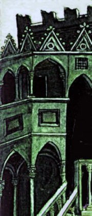
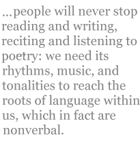
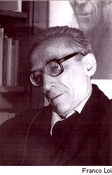

Andrew Frisardi
Translations from Franco Loi, with an essay on Loi and dialect poetry
from Strólegh (1975)
Hurled, like a slap I leap three stairs,
and pass in midair to the real-life theater
that’s my father as he’ll be in time,
I spring, run, and the slamming of the door
is like the air that chases me behind.
With three, four, pushes at the railing,
I fly the stairs and reach the doorbell.
My mother slowly shuffles and then opens,
my father laughs, and to me it seems at nothing.
Original:
Trâ, ‘me ‘na s’giaffa salti trí basèj,
e passi in mezz a l’aria, al ver teater
che l’è mè pàder ‘me sarà nel temp,
e schitti, curri, e ‘l sbatt che fa la porta
l’è cume l’aria che me curr adré.
A trí, a quatter, al sping de la linghéra,
mí vuli i scal e rivi al campanèll.
Mia mama, adasi, la sciavatta e derva,
mè pàder rìdd, e mí me par per nient.
from Amur del temp (1999)
I know that suffering has a name, its chain
is love that empties overnight of flavor:
you touch a butterfly and find its pain
is dust and all the heat of it is over...
Ah, name! oh, voices, and the chain that wraps
us round, we hold our breath to sip a flower,
but we lose the name in wind, what’s left, perhaps,
is unreality that shadows heart and life —
that from which at night we’re hung by straps.
Original:
El sú, el dulur g’a ‘n nòm, la sua cadèna
l’è amur che prest se svöja del savur:
se tucca ‘na farfalla e la sua pèna
diventa pulver e sensa pü calur...
Ah, nòm! oh vûs, cadèna che me streng,
le sú, se curr cul fiâ, par bév un fiur
ma al vent se pèrd el nòm, e resta el feng
che l’è l’umbría del cör e de la vita,
e ne la nott gh’impicca cuj sò ceng.
from Bach (1999)
Oh church of Milan that’s utterly plain
and dead forever — Giambellino’s church —
eyes that put me under the spell of sadness
that grips us when we try to hold time back.
The water was there, and evening in full stride
across the portal, and those women who adore
the wind, and the mystery that opens wide
at twilight, the prayer that seems addressed to naught.
Oh church of Milan, oh women who bide
your time to be transported to the core
of feeling, I dipped my hand in holy water
and searched out eyes that hardship had caught.
Original:
Oh gesa de Milan sensa belessa,
gesa del Giambellin morta per semp,
öcc che mí dâ l’incant de la tristessa
che ciappa quan’ ch’j òmm tègnen el temp.
L’era lí l’aqua, e dal purtal la sera
l’entrava tra quj donn che prega el vent,
e gh’era quèl mistêr del scend la sera
e quèl pregà che par de dâss al nient.
Oh gesa de Milan, oh donn che spera
de vèss purtâ nel vèss del sentiment,
tucavi cun la man l’aquasantera
e j öcc cercavi spèrs nel patiment.
from Liber (1999)
Inside of me there’s a loggia from Sarzana
made of green wood and in the setting sun,
a hunchback hurrying away and a necklace
winking behind two flavors of ice cream,
and in shadow of a square’s nice colonnades
the postcard’s colors faded with heartache...
A cat with black claws atop a crate
is eyeing me as if to read my thoughts,
and the town that seems to pass before my eyes
in a turning back of nights ends up a fake...
Oh, those evenings of youth, this life of ours,
no sooner do we dream them back, we wake!
Original:
G’û denter ‘na baltresca de Sarzana
vérda de lègn al tramuntà del sû,
‘na göba che la scappa e ‘na culàna
che rìdd tra dü gelati de savur,
e a l’umbra di bèj pòrtegh d’una piassa
la cartulina stinta d’un dulur...
Negher de ung un gatt in sü ‘na cassa
par che ‘l me varda per capì i penser
e l’è ‘na citâ fenta che par passa
davanti aj öcc nel revultàss di ser.
Oh ser de giuentü, oh vita nostra,
che semper returnì, ma mai sí ver!
Dialect Poetry and Franco Loi
[ This is the preface to Andrew Frisardi’s book, Air and Memory (Counterpath Press, 2007), of translations from the Milanese poet Franco Loi, one of the best-known contemporary poets in Italy. ]
How deep in us is the first language of our thought, or the language of our first thought? Apart from linguistic theories, we can reflect on this question in terms of our own direct experience of language’s intimacy with the body, and with the body’s phantasmic associate, memory. Over the past several years, for example, I have been living in a foreign country, Italy, learning and speaking its language, and have constantly been struck by how closely linked words and grammatical constructions are to the layering of experience over time, to personal relationships, to all connections that animate us.
I like how Dante says it at the beginning of De vulgari eloquentia (On Eloquence in the Vernacular), where he defines the vernacular as the language we learn without knowing it, without needing rules, imitating those who feed and nurture us. Ironically, then, the fundamental language of our thought is too deep for words. This is one reason that people will never stop reading and writing, reciting and listening to poetry: we need its rhythms, music, and tonalities to reach the roots of language within us, which in fact are nonverbal.
Dante goes on in that passage to compare the vernacular with scholastic or literary languages (for him, Tuscan dialect as opposed to Latin), those acquired by the few who have the time or the means or the inclination to study, and judges the vernacular as decidedly the more noble of the two. Why? Because, says Dante, it was the one first used by the human race; because the whole world uses it, even if with different pronunciations and words; and because it is natural to us, while the other is artificial.
These contrasts might be more complex for a poet whose early experience of language was conditioned by sweeping social changes and his own family’s change of place. He or she might feel a need to write in a language that reflects the shifting of contexts. Such is the case of Franco Loi, writing in the Milanese dialect he learned outside his family home. As Loi himself explains in the interview in this volume:
My father was from Cagliari [in Sardinia] and my mother was from Parma, and my father, an orphan since his father and mother died when he was eleven years old, didn’t go back to Sardinia till 1954. So my mother talked her Colornese [Colorno is a town near Parma], and the only relatives I knew talked my mother’s language. But with me, at home, they both talked Italian - only when she got mad did my mother talk in Colornese. But Milanese dialect was all around me, in the streets at the local chapter of the PCI [Partito communista italiano], in the taverns, in the courtyards. But I was an adolescent, fourteen or fifteen years old, when I started to talk it. You could say that Milanese is the language of my youth - someone has written that my language is a fraternal language.
The source of Loi’s poetic vernacular, then, is the urban community of his youth. Loi was born in Genoa but moved to Milan with his parents in 1937, when he was seven years old. Throughout the late 1940s and the 1950s, Loi worked at the loading docks at Lambrate and Rinascente, in the industrial area of Milan, an experience that greatly influenced his politics and poetry. And his memory of wartime Milan, where so much combat occurred, and where the Resistance movement against fascism was centered, has directly or indirectly affected all his writing.
Italian critics have described Loi’s Milanese as one that is “full of impurities, of mixed influences, cultured and popular,” a “combination of local proletariat speech with that of the immigrants from the countryside of Lombardy” (and from every other region of Italy, Loi comments elsewhere). Here and there, Loi has also used the Colornese dialect of his mother and the Genovese dialect of his earliest environment. He has sometimes concocted a dialect version of a learned Italian phrase or injected bits of foreign languages or Latin. None of this is done, however, in a spirit of postmodern detachment or cerebral “pastiche.” Here is how Loi has described his method: “My attitude toward dialect languages is simply one of respecting what happens when I am overwhelmed by images. My approach is to adapt the form to the incandescent matter of the unconscious.” Nevertheless, Loi’s everyday language since his youth has been standard Italian. In other words, and contrary to what we often assume is inevitable, he feels most natural writing poetry in a language he doesn’t use in daily life.
Recent Italian dialect poets often speak standard Italian in their daily lives even though they use dialect for their writing. Such writers embody the linguistic contradictions that have been present in Italy since the fifteenth or sixteenth century. After the Renaissance, poetry in dialect was obscured by what Loi and others have called the neoclassical aesthetic or Petrarchism of Italian letters — in effect, the marginalization of dialect writing. Loi’s mentor, the Venetian poet-critic Giacomo Noventa, was scornful toward the High Modernists on this account. In addition, with the post–World War II economic boom and the consumerism and mass culture that attended it, local dialects began dying out. The surge in dialect poetry after the war was in part a reaction against these homogenizing influences. These dialect poets felt that their relationship to the national language was comparable to that of Dante’s to Latin. They saw standard Italian as the language of schools and books, which had been systematically imposed after the unification of Italy in 1870.
The best Italian dialect poets, however, have been motivated to write in dialect not by retrograde nostalgia but by community identity and an assertion of the interior voice of poetry. As Loi’s Dutch translator Willem Van Toorn put it, “Loi is not a dialect poet in the traditional sense: one who shields the intimacy of his regional culture from the big, bad world. To Loi the ‘vernacular’ of his choice is an uncontaminated medium with which to wage lyrical war on the world at large.” For Loi, the world at large is one of soulless standardization: in culture, politics, and social relations.
This war has been waged in a few different poetic styles. There is a side of Loi, more prominent in his early poetry, that is polemical and anarchic. The poet Franco Fortini, in his introduction to Loi’s 1975 collection Stròlegh, called this strain in Loi’s work “tragicomic” for its satirizing of corrupt clergy, the exploitative rich, ivory-tower intellectuals, and politicians, usually taking place within the context of the people’s Milan. Loi has links in this work to the long tradition in Italy of anticlerical, comic-burlesque literature, such as that of Rustico di Filippo in the thirteenth century or Giuseppe Gioachino Belli in the nineteenth. Yet Loi, like most Italian poets, has strong Catholic roots, and he has often addressed poems to God: his politics are visionary. As one critic puts it, Loi “oscillates between the burning immediacy of lived experience and what the poet calls ‘l’invisìbel müseca del feng’ [the invisible music of fiction].” Then there is Loi the storyteller — he originally wanted to be a novelist — a persona in which he has produced a number of narrative poems about life in Milan from the 1940s right up to the present. Loi’s most important book in this vein is L’angel (1981, 1994), with autobiographical details scattered throughout the poetry. Finally, there is a strongly sonorous, lyrical bent in Loi, in which he draws directly on the European lyrical current that originated in the cult of the beautiful in Arab Spain, Provence, Sicily, and Tuscany.
This book’s selection of poems, drawn from several of Loi’s collections, represents the poet’s lyrical mode, although even his lyrical poems often contain traces of the other styles. One of the reasons this selection is so focused is its size. Loi’s narrative and “tragicomic” work is best read in quantity and thus is hard to represent unless on a much larger scale. Those aspects of Loi’s work are also more resistant to translation into standard American English, which happens to be my own vernacular.
In an essay on translating dialect literature, Luigi Bonaffini points out that “translating into a standard language, the translator cannot capture the eccentricity of vernacular speech, its function as an alternative, a non-normative deviation from the norm.” On the other hand, “dialect [is] the norm for dialect speakers, so that translating into slang, that is, deviating from the norm, would be inappropriate.” As the translator Michael Palma puts it, translating Italian dialect into phrases such as “ ‘So I says to him, I says,’ or some such thing, would be totally inappropriate; it would fail to catch the spirit of the original and it would make for some rather bizarre-sounding English poetry. The only real solution [is] to translate... into [one’s own] idiom: if there [is] any concession to the supposed flavor of the originals (and even this notion of ‘flavor’ is debatable, if the dialects are in fact the normal language of their speakers), it [is] a slightly greater tendency at moments toward more informal expression.”
According to Bonaffini, the word dialetto has different implications in Italy than dialect does in the United States:
One must take into account the considerable variation in meaning that the very term dialect undergoes in Anglophone areas, where in effect it stands for anormality, departure from a well-defined linguistic standard, so that even a local or regional pronunciation can be regarded as a form of dialect. The “vernacular” style is therefore designated by the deviation from a standard, where there is no multiplicity of autonomous idioms as in Italy.... In Italy... dialect is understood not as a simple divergence from the national standard, but an autonomous... historically determined... linguistic system.... [The use of Italian dialects can be viewed therefore as] the exact opposite of deviation.
When I asked Franco Loi about translating dialect poetry, he commented that the Divine Comedy was written in Florentine dialect yet translations of it have seldom reflected that in a self-conscious way. This is because Dante was simply writing in his own vernacular, and translators have by and large followed suit. However, says Bonaffini (in discussing Miller Williams’s translations of Belli), “in order to translate dialect as it was perceived by those who spoke it, [the translator is] obliged to translate its impertinence, its potential for sedition.” This eccentricity, the “impertinence” or “potential for sedition” implicit in the use of dialect in the contemporary context, is especially relevant in poetry that expresses rebelliousness and the communal context of the dialect’s origin, such as Belli’s (or Loi’s) burlesque and satire, but it is less essential to the introspective lyrical vein of the poetry in this selection, which is the first volume of Loi’s work to be published in English.
My approach in translating Loi, then, has been to aim to bring across something of his poems’ meter-making argument, to use Emerson’s phrase, and a sense of their musical quality. I do not speak Milanese, but I do know its sounds, as Franco Loi pronounces them, by listening to Loi read in person and in recordings. As for interpreting the dialect texts, like Italian readers by and large I used the Italian glosses that Loi provides with each poem to read the original, as well as a dictionary of Milanese. In many cases the author himself helped me to get the literal meaning. Thus I was able to take the rhythms and cadences of the original poems as the movement that set my own speech into motion. Because there is often a hendecasyllabic basis to Loi’s verses, I frequently echoed that more or less with the English equivalent, iambic pentameter. Likewise, I tried to use end rhymes in poems where Loi does, as long as it didn’t sound too obtrusive or artificial in the version I was making. Loi has pointed out that he was using rhyme and traditional meter in a period, the 1960s and 1970s, when very few other poets were using them, and I wanted to represent this aspect of his work.
An Italian review of my volume of translations Giuseppe Ungaretti: Selected Poems includes an insight that applies to translation of any poet — some more than others no doubt, and dialect poets, perhaps, most of all. The reviewer, Donatella Bisutti, compares Italian/Mediterranean culture to that of America, and concludes that it is impossible to translate Ungaretti’s world because it is so different from the Whitmanesque expansiveness of our culture. “In the landscape of Ungaretti,” she writes,
or in his verse, there is none of the immensity of the new continent, the desire to master it: the circumscribed, compressed poetic line circumscribes and compresses a space as well, as in the poem “Sera,” or “Evening,” withdrawing into that acqua chiara colore dell’uliva, that “limpid olive-colored stream,” and evoking a Mediterranean world packed with history, even just in that dimension of the olive, compared to those enormous landscapes and the immense, wild spaces of a Whitman, but also those of a more domestic poet such as Frost. This made me reflect on the fact that a translation, even if it manages to render as well as possible the phonetic and rhythmic quality of the original, somehow overcoming any linguistic impediment to enjoying the text, never can eliminate the extraneousness of a poetic body of work with respect to another tradition: this is perhaps the true, definitive untranslatability of a text.
As much as I agree with what the reviewer is saying here, I also think that it is an overly purist view of the art of translation. Literature isn’t mathematics — it varies from place to place and person to person — and a taste of a foreign tradition or writer’s world is a lot better than none. Most of us read Homer in translation, but even those who can read the original aren’t hearing Homer the way an audience did in 600 b.c. And yet we love Homer. The translator is like a working man’s version of the rhapsode in Plato’s dialogue the Ion, drawing inspiration from the original and attempting to pass it on, the way rings of iron transmit a magnetic field that derives its power from a single magnet. The word rhapsode originally meant “one who stitches together songs.” The translator enters the author’s world in an especially close way; practices his or her own craft of stitching together words; and shares the experience with others. That is no doubt why, even though people so often say that poetry can’t be translated, we keep on doing it anyway.
Andrew Frisardi
Orvieto, May 2007 Translations of Franco Loi’s poems and the preface to Air and Memory courtesy Counterpath Press.
Andrew Frisardi is from Boston but has been living in Orvieto, Italy, since 1999. He edits freelance for various U.S. presses and teaches a course on Dante to American students at Gordon College in Orvieto. His book of poetry translations, Giuseppe Ungaretti: Selected Poems, was published by FSG; and more recently his book of translations from Franco Loi, Air and Memory, was published by Counterpath Press. His poems, articles, reviews, and translations have appeared in numerous journals.
|